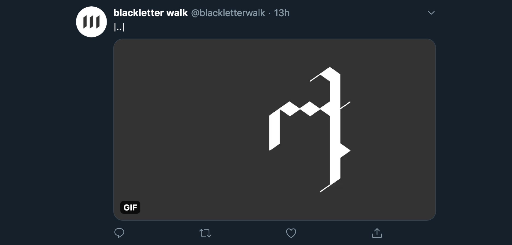

Blackletter Walk
is an automatic writing gif bot that borrows its visual language from blackletter calligraphy.
Generative art
The animation is drawn with Node.js’s node-canvas and gifencoder, and the last frame is then run through Ocrad.js to provide an OCR (optical character recognition) text preview that accompanies the tweet.
Web development
The bot lives on Heroku, tweeting automatically through the Twitter API via Twit.